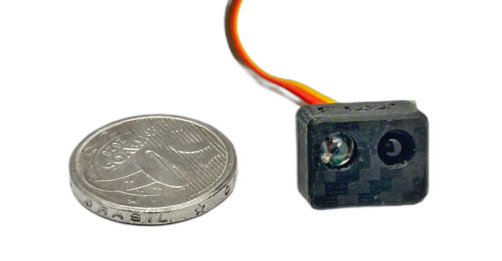
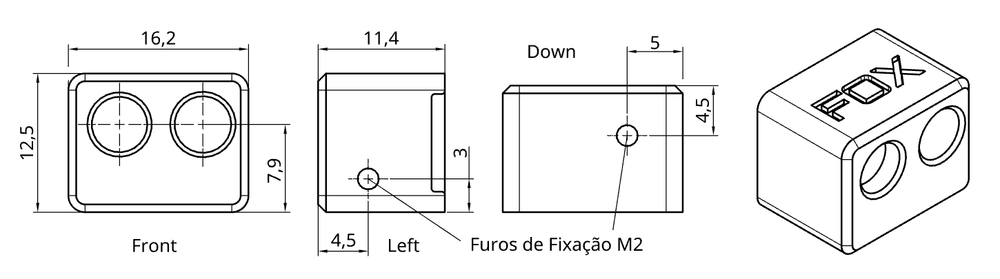
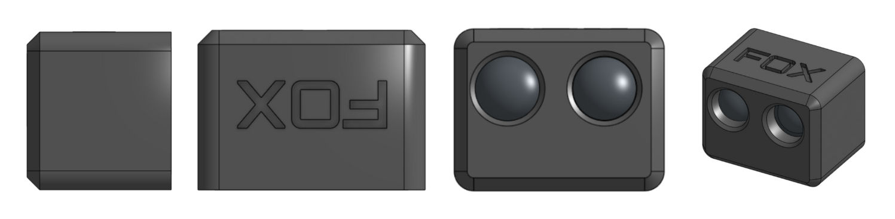
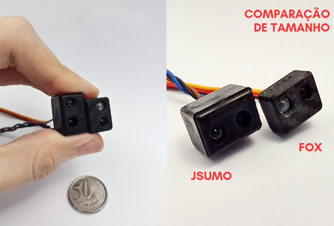
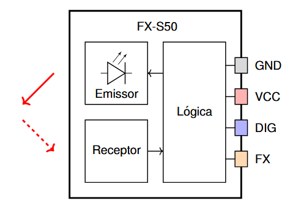
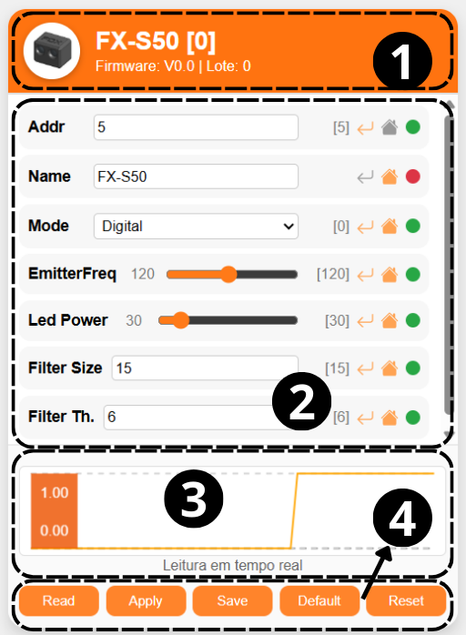
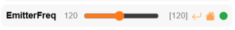
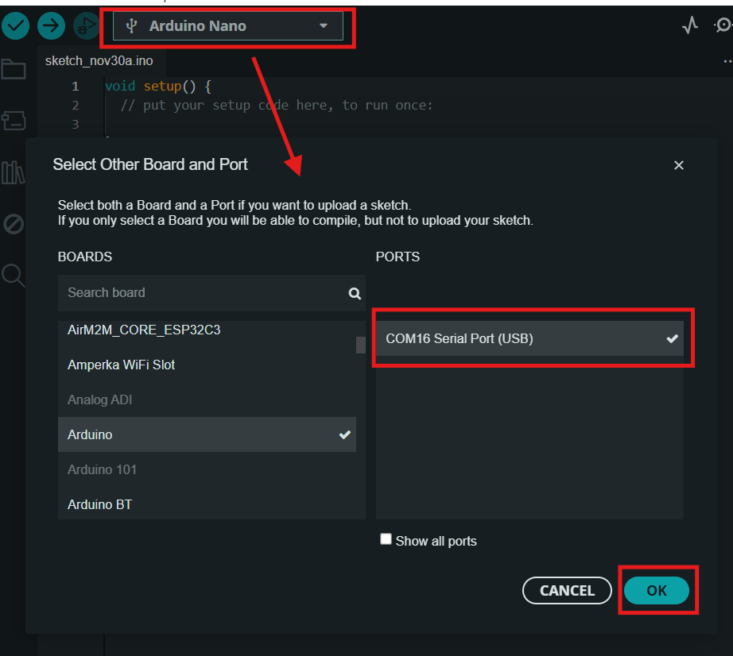
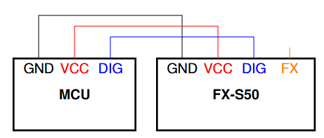
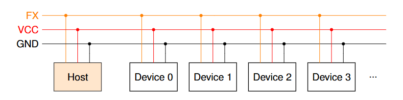

Sensor FX-S50
Sensor digital de obstáculos com alcance ajustavel.
Sensor digital de obstáculos compacto, rápido e configurável. Possui duas formas de leitura: saída digital ou FoxWire (FX). Usando FoxWire é possivel conectar até 32 sensores em um unico fio, reduzindo a complexidade de conexões. A saida dital é 1 quando detecta um obstaculo e 0 quando não detecta.
Datasheet: Datasheet_FXS50
Modelo 3D: Modelo 3D STEP

Características Técnicas
| Característica | Valor |
|---|---|
| Tipo de sensor | Obstaculos digital ajustavel |
| Faixa de medição | 0 a 50cm (*) |
| Tensão de operação | 3,3 a 5V |
| Corrente de operação | 12 a 16mA |
| Interface de comunicação | Saida digital e pino Fox Wire |
| Dimensões | 11,4 x 12,4 x 16,2 mm |
| Peso | 4,9 g |
(*) Medição na configuração padrão. Em testes, chegou a alcançar até 70cm na configuração mais sensivel. Os resultados podem variar em função da cor, inclinação e tamanho do objeto detectado. Ajuste a sensibilidade em função da aplicação.


Comparação com outros sensores

Pinagem
- Pino GND
- Pino Vcc (Alimentação de 3,3V a 5V)
- Pino S de saida digital ( HIGH detectado, LOW não detectado )
- Pino Fox Wire (Configuração e leitura)

Principais parâmetros
Este sensor é configuravel, a tabela abaixo apresenta os principais parâmetros.
| Parametros | Descrição |
|---|---|
| Endereço Fox Wire | Endereço do dispositivo para o protocoolo Fox Wire |
| Modo de leitura | Modo Digital (0 sem obstaculos 1 com) ou Analógico ( de 0 a 20, quanto maior mais distante). No modo Analógico a leitura do valor é feita via pino FX. |
| Potência do Emissor | Potência do emissor, quanto maior maior o alcance. Varia de 10 a 100 |
| Frequência do Emissor | Frequência do emissor, pode ser util para ajustar o alcance ou melhorar o desempenho de sensores proximos (*). valor normalizado de 0 a 255 |
| Trig e Filter_len | Ajuste de filtragem do sinal usando um integrador e um "schmitt trigger". Quanto maior a filtragem mais estavel, porém menor a frequência de atualização. O usuario pode fazer o ajuste fino para determinar a melhor configuração |
(*) Na deteção a longa distância a luz emitida por dois sensore um ao lado do outro a luz emitida por cada um pode causar interferencia destrutiva, reduzindo o alcalce de cada um. Usar frequências um pouco diferentes pode ajudar nisso.
No FX-S50 Como alterar o alcance do sensor 📏
A forma mais simples é alterando o parâmetro led power ou e_brightness (no shell), que controla a luminosidade do emissor do sensor. Quanto maior a luminosidade, maior o alcance. Este parâmetro pode variar de 5 a 100.
Como configurar?
Existem duas Formas de configurar o sensor, via o Fox WebTool ou via o modo Shell. Mas antes de tudo é preciso de ter um FoxLink que é a placa que conecta o sensor ao computador, acesse FoxLink para mais informações.
O FoxLink WebTool é uma ferramenta gráfica que roda no navegador que permite ler em tempo real o sensor e mudar suas configurações. Já o modo Shell usa comandos de texto para fazer o mesmo sem interface gráfica, rodando em qualquer aplicativo para comunicação serial, como Arduino IDE + Serial monitor, Putty ou Fox Serial.
Configurando com FoxLink WebTool
- Acesse FoxLink WebTool.
- Clique no botão Conectar e selecione a porta COM do FoxLink. Dica: caso não conecte, verifique se a porta COM está em uso por outro aplicativo, como Arduino IDE ou fatiador 3D. Caso esteja, feche o outro aplicativo e reinicie a página.
- Clique no botão Scan para buscar dispositivos na rede FoxWire.
- A ferramenta listará os endereços onde encontrou dispositivos e irá gerar uma janela de configuração para cada. Similar a imagem a seguir.
- Para realizar um novo scan, basta clicar novamente em Scan e aguardar.

FoxLink WebTool: Descrição de cada campo
- Identificação do dispositivo: Foto, Nome, Modelo e Lote.
- Parâmetros Parametros que podem ser alterados.
- Gráfico em tempo real da leitura do dispositivo.
- Botões de ação do sensor:
Read: Lê o valor de cada parâmetro no dispositivo.Apply: Aplica os valores de cada parâmetro no dispositivo.Save: Salva permanentemente as configurações aplicadas.Default: Retorna à configuração padrão. Para salvar essa configuração, é necessário clicar emSaveem seguida.Reset: Reinicia o dispositivo e após o reset lê (Read).

Cada parâmetro possui 3 icones do lado direito. Eles indicam se:
- Return se o valor atual é o mesmo que o lido do dispositivo. ao clicar ele retorna pro valor lido.
- Home se o valor atual é o mesmo que o valor default, ao clicar vai para o valor default.
- Circulo se o valor atual ja foi salvo (🟢 Verde = Salvo, 🔴 Vermelho = Não salvo), não é clicavel.
Como configurar no modo Shell
O modo Shell é usado para se comunicar diretamente com o sensor usando comandos de texto. Esse modo só permite a comunicação com um unico sensor por vez (Para configurar varios sensores simultaneamente use Fox Wire).
⚠️ IMPORTANTE:
1. O modo Shell só funciona com um dispositivo conectado ao FoxLink por vez. (para configurar varios simultaneamente use FoxLink WebTool).
2. Ao terminar de configurar envie o comando "save" para salvar as alterações, caso contrário, ao desligar as alterações são perdidas!
Procedimento:
1. Conecte o sensor ao computador usando um FoxLink;
2. Abra algum aplicativo de comunicação Serial, como Arduino IDE + Serial monitor, Putty ou Fox Serial;
3. Selecione a COM do FoxLink;
4. Configure o baudrate para 115200 e "\n"+"\r" ao final ou "NL & CR" (no Arduino);
5. Envie "FOX-SHELL" para o sensor entrar no modo Shell. O sensor irá responder enviando "FOX-SHELL INIT!".
6. Com o modo Shell iniciado você pode configurar o sensor ou realizar medições. Digite o comando "help" para exibir a lista de comandos disponiveis.
7. O comando "dump" exibe os valores de configuração do sensor.



Lista de comandos do Shell (FX-S50 Firmware V1.4)
helplista os comandos disponíveisexitencerra o shellregisterlê ou escreve um registrador de 8bitsdumplista as principais configuraçõesvccmede a tensão aplicada no microcontroladorresetreinicia o sensorsavesalva as alterações realizadasrestorerestaura as configurações de fábricarestorerestaura as configurações de fábrica sem alterar o endereçoreadlê o sensordumplista as principais configuraçõesaddresslê ou altera o endereço do sensore_freqlê ou altera a frequência do emissor (de 0 a 255)e_brightnesslê ou altera o brilho do emissor (de 0 a 100)f_sizelê ou altera o comprimento do filtro (de 1 a 255)f_triggerlê ou altera o limiar de acionamento do filtro (de 1 af_size)aq_freqlê ou altera a frequencia de aquisição (de 1 a 127). Recomendado 14khz. (0 significa o mais rapido possivel, mas o sinal pode ficar instavel).namelê ou altera o nome do dispositivo (até 16 caracteres)uuidlê o id único do sensorscanscaneia com varios brilhos para definir um grau de distância. parâmetro: steps, start_value, step_size, measurements, threshold [%], frequency.set_digitalcoloca o sensor em modo de leitura digitalset_analogcoloca o sensor em modo de leitura analógicaGPIO0Controla as configurações do GPIO0GPIO1Controla as configurações do GPIO1
Diagrama Esquemátimo
Conexão usando Saida digital Simples

Conexão usando Fox Wire
Repositório FoxWire: https://github.com/luisf18/FoxWire

Exemplo de código usando a saida digital simples
// Fox Dynamics Team
// Codigo simples usando a saida digital
#define SENSOR_PIN 8
void setup(){
Serial.begin(115200);
pinMode(SENSOR_PIN,INPUT);
}
void loop() {
Serial.print( "Leitura do sensor: " );
Serial.println( digitalRead(SENSOR_PIN) );
delay(300);
}